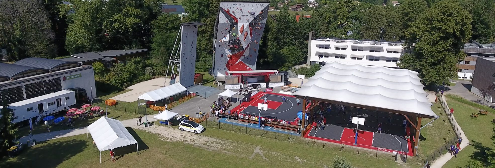

La ville de Voiron
Le territoire voironnais s'étend au fond d'une cuvette fermée vers le nord, aux limites de la commune de Chirens. Les quartiers périphériques septentrionaux de la ville en garnissent les pentes. Les eaux d'écoulement s'échappent vers le sud par la vallée encaissée de la Morge. Ce cours d'eau rejoint au bout de quelques kilomètres la dépression alluviale de la vallée de l'Isère en direction de Moirans et de Tullins.
Le territoire communal se situe quasi entièrement hors de la plaine de l'Isère, mais plutôt dans la limite basse d'une marge située au sud-est des collines du Bas Dauphiné et qui se prolonge vers l'ouest par la plaine de Bièvre.
Le campus
Tremplin Sport Formation est une structure créée le 8 février 2010 qui propose toute l’année, sur un même lieu un package complet de prestations variées pour différents espaces d’activités.
Acteur du parcours de l’excellence sportive, support des pôles haut niveau (escalade, badminton et VTT), prise en charge et accompagnement du sportif tout au long de son parcours scolaire et sportif. Réputé pour la qualité de ses structures sportives, le tremplin accueille également différents rassemblements sportifs tels que les Intercentrales 2018.
